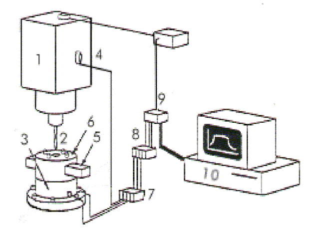
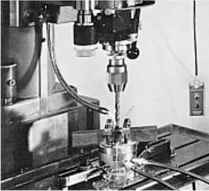

LMP>Linhas de Pesquisa>SIMAP>Monitoramento do Estado da Broca no Processo de Furação
INTRODUÇÃOA crescente necessidade de diminuir os tempos de parada indesejáveis, provocados pelas trocas de brocas devido à quebra das mesmas, visando a redução dos custos de manutenção preventiva e corretiva, faz com que se procure a utilização de sistemas que possam informar a real situação da ferramenta de corte. Geralmente, a medição de desgastes é feita diretamente na broca através de métodos ópticos adequados, havendo a necessidade da interrupção do processo, gerando assim tempos improdutivos. Visando minimizar tais tempos, propõe-se o monitoramento on-line do estado da ferramenta no processo de furação através da medição indireta de desgastes e avarias da broca. OBJETIVOSDesenvolver e implementar um procedimento eficiente para o monitoramento on-line da furação, a partir de grandezas indiretas de correlação (emissão acústica e força), para que se possa efetuar a detecção do estado da broca (desgaste e/ou quebra) em processo. DESENVOLVIMENTO DA PESQUISAOs desgastes mais freqüentemente utilizados para estabelecer o critério de fim de vida das brocas, os quais serão monitorados, são o desgaste do flanco, das guias e do gume transversal. A detecção será feita através de sensores localizados estrategicamente na máquina, os quais informarão as avarias a partir da aquisição de sinais da força de avanço (FZ), do momento torçor (MZ) e da emissão acústica (EA) gerados no processo de furação. Os sinais obtidos pelos diferentes sensores são devidamente tratados para uma posterior quantificação da vida da ferramenta.  Setup Experimental [adaptação de Noori & Komanduri (1993)]:(1) furadeira, (2) broca, (3) plataforma piezelétrica, (4) sensor de emissão acústica, (5) peça, (6) dispositivo de fixação, (7) amplificadores de carga, (8) filtros A/D, (9) placa de aquisição de dados, (10) computador. O sistema de monitoramento em questão visa proporcionar:
 As principais vantagens no desenvolvimento da pesquisa residem no fato de que pequenos cuidados num processo podem levar a ganhos consideráveis de efeito prático e tecnológico. Desta forma, deseja-se obter um procedimento eficiente no monitoramento da furação, para possíveis aplicações futuras em chão-de-fábrica. |
| Contato: SIMAP Walter Lindolfo Weingaertner Prof. Dr.-Ing |
Última Atualização 21.06.2006 |